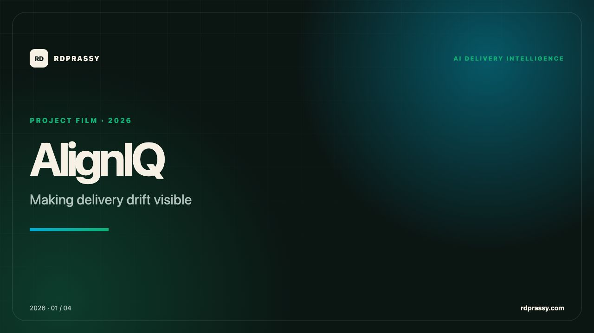
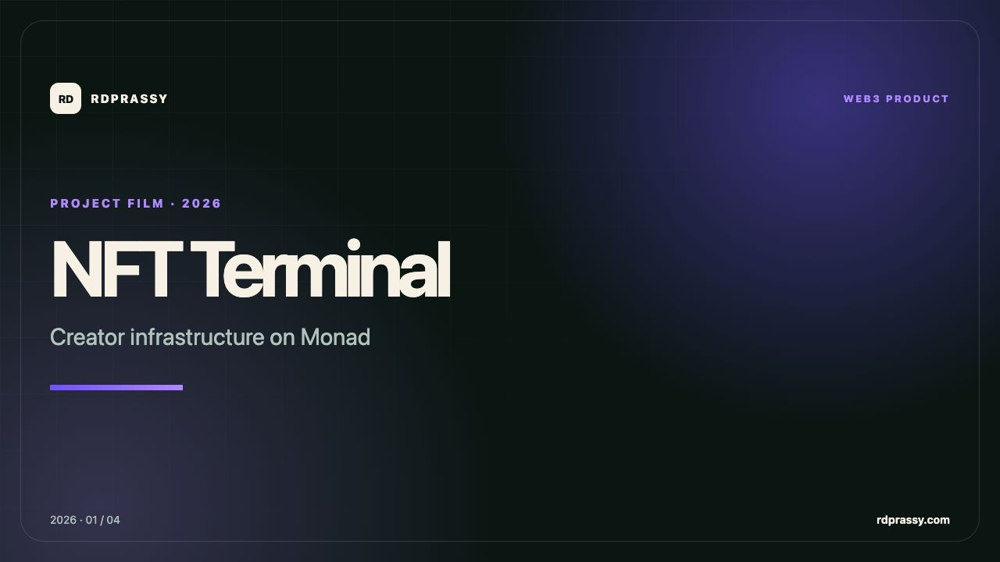
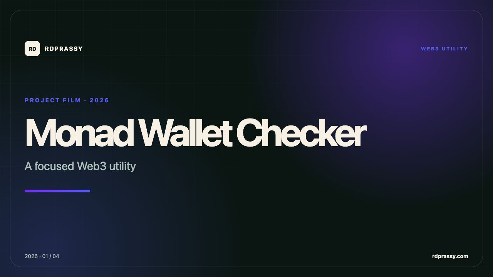
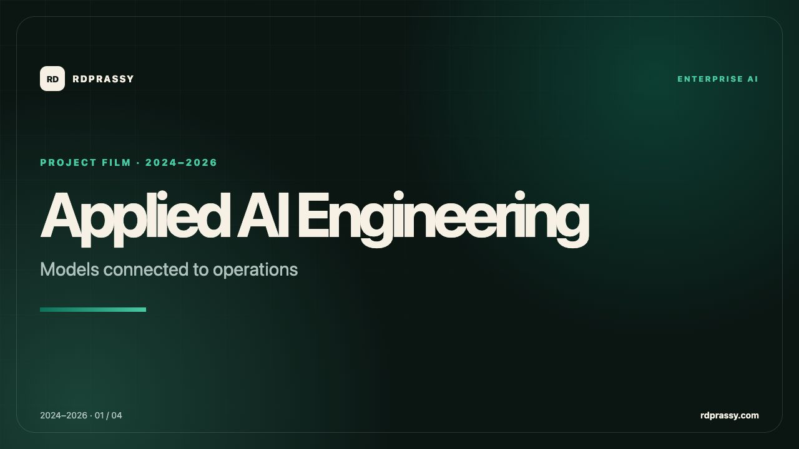
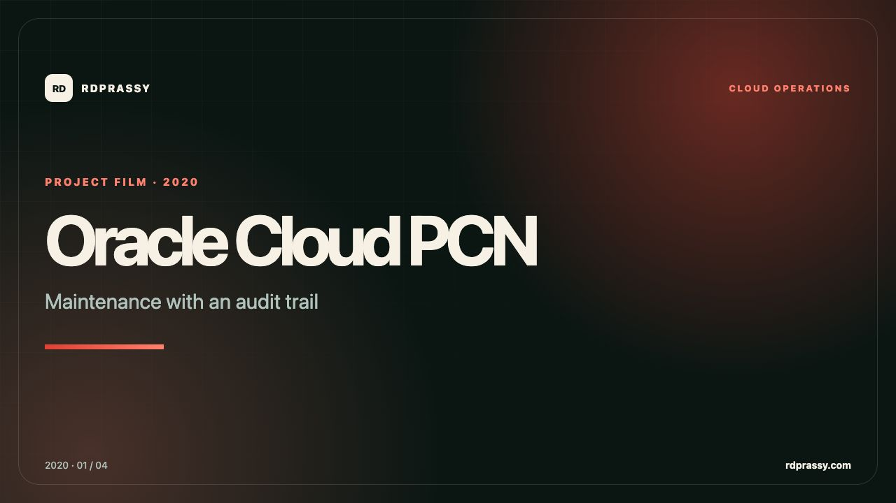
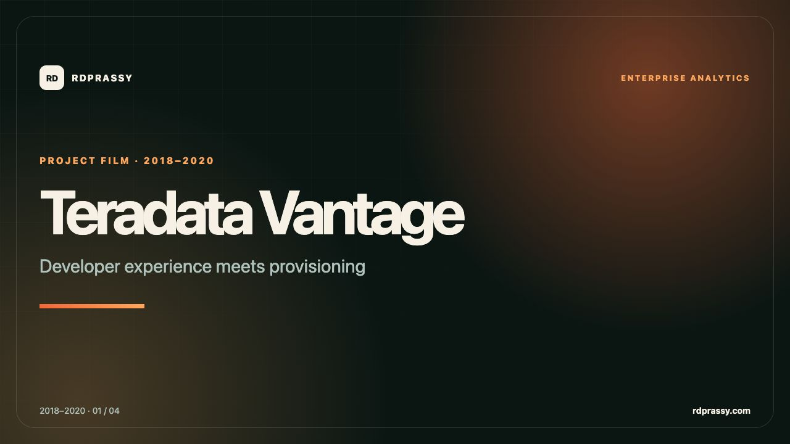
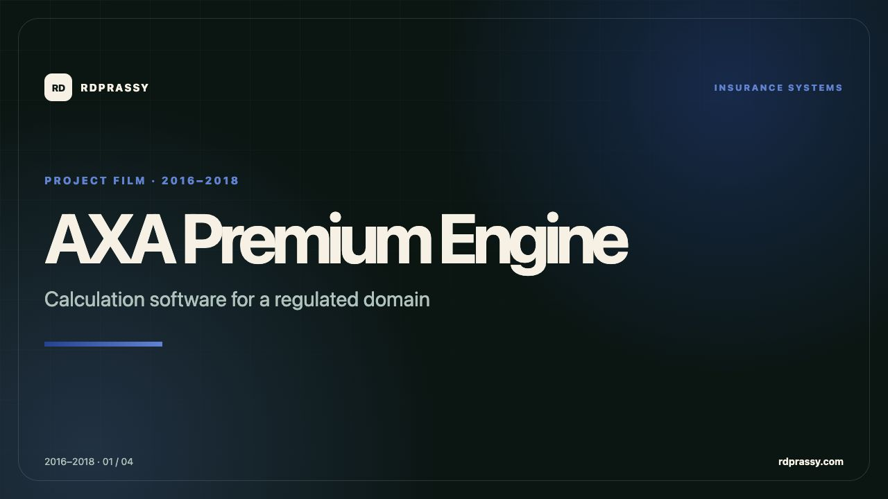
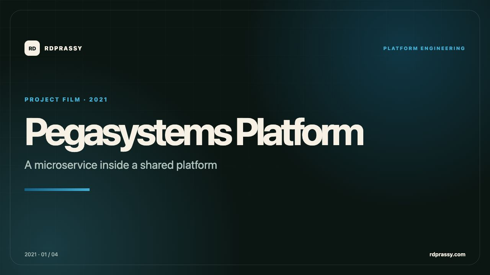
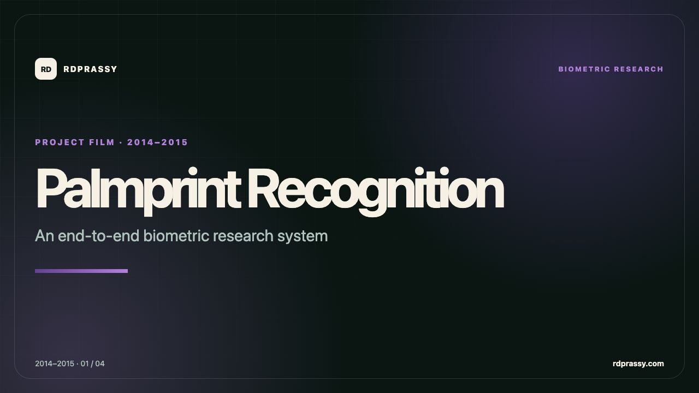

Project Cinema · Season 01
The work, explained in motion.
Ten concise films move past the résumé line: what problem mattered, how the system works, and where the engineering created value.

Start with AlignIQAI delivery intelligence · 00:4710project films
8engineering domains
< 1 mineach, focused by design
Watch the collection
Public YouTube playlist ↗
One project. One clear engineering story.
Every film has original branded visuals and concise voice narration. Open any film on YouTube for full playback.

00:47
00:42
00:51Applied AI Engineering
Analytics, retrieval, and agent reliability with measurable boundaries.
Read the AI case study ↗ 00:48
00:48

00:43
00:43Teradata Vantage
Help developers create analytics, then make installation repeatable.
Read the case study ↗
00:48
00:51
00:47Palmprint Recognition
From an image of a palm to a genuine-or-impostor decision.
Read the case study ↗How the films were made
AI-assisted production. Human-owned story.
Grounded in public evidence
Every script stays within the verified capabilities and outcomes already documented in the portfolio.
Designed as a visual system
Original 16:9 title cards, system flows, and technology summaries give the collection one recognizable identity.
Made for access
Concise voice narration and prepared transcript files make each engineering story easier to watch, scan, and share.
Prefer the architecture behind the film?
Continue into the written case studies for implementation context, constraints, and public-safe outcomes.